덱 공략
PVE는 과거와 크게 다르지 않지만, PVP는 희전완포의 등장으로 스팅덱·망염덱·뫼비덱·견고 기반 미는덱 대부분이 현역에서 밀려났습니다. 아래는 현재 현역으로 활동하는 덱들 — 목표로 삼거나 참고하세요.
※ 읽기 전에 꼭 봐주세요 ※
글 구성 — 각 덱은 다음 순서로 정리했습니다.
[덱 이름] · 존버덱/미는덱 → ① 덱 설명 → ② 덱 구성(사용 수호신) → ③ 구성 설명 → ④ 추천 신생
| 덱 유형 | 정의 |
|---|---|
| 존버덱 | 투혼까지 안 죽고 버티는 덱 |
| 미는덱 | 적을 맵 끝까지 밀어서 죽이는 덱 |
신생 약어표
덱 구성은 신생 이름을 한 글자로 줄여 적었습니다.
표기. 덱 구성이 A(B)로 적힌 경우 A를 많이 쓰지만 B도 사용 가능하다는 뜻입니다.
티어덱
슾카덱
존버덱›
스퍼의 압도적인 탱킹과 최대 체력 비례 %딜로 딜링하는 덱. PVE 최강 사기덱입니다. PVP에서는 하드카운터 망염 때문에 나락을 갔었지만, 희전완포 등장으로 망염이 안 쓰이기 시작하면서 희전완포 상대로 약한 뫼비우스를 빼고, 희전덱의 카운터인 나인테일을 채용해 희전완포 + 탱커덱 상대로 좋은 모습을 보입니다.
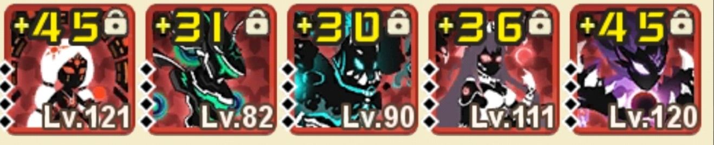
스퍼·카라·솔라를 고정하고 뒤에 원딜을 배치합니다. 스퍼를 쓸 때 가장 많이 쓰게 될 덱으로, 스테이지 적 구성에 따라 변형되며 PVP에서 고스팩 상대도 이기는 모습을 보여줍니다.
슾카반솔난
기린 / 백호 / 주작 — 희전완포 + 탱커 조합을 카운터.
단 스퍼 체형을 크게 키워 나인테일 1스킬 같은 범위공격에서 후방 아군을 보호하는 것이 강제되고,
다른 덱에 약해 뉴비에겐 비추천.
※ 스퍼 · 카라 · 반 · 솔라 고정
추천 신생 — 뫼비우스, 나인테일, 사룡, 안타레스, @
[희전 + 탱커덱]
현재 메타를 지배 중인 조합입니다. 오페라의 자리를 위협하던 망염을 메타에서 밀어낸 장본인이며, PVP 최강 폼 / PVE 약세. 아래에 세부 덱들을 정리했습니다.
콩희덱
존버덱›
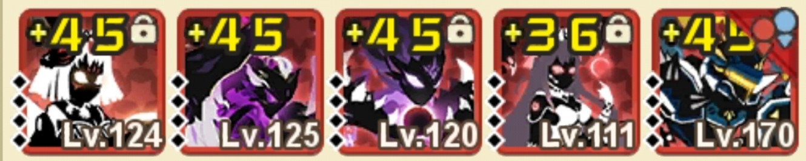
탱킹 능력이 최상급인 아이가스에 희전·카라를 기생시킨 덱. 희전덱 중 유일하게 PVE에서도 좋은 모습(단, 후반 해협은 별로)을 보입니다. 주의할 점은 카라의 회오리보다 아이가스의 이속이 빠르면 상대 원딜에게 아이가스가 녹을 수 있다는 점, 그리고 아이가스 4스킬 탓에 오스덱에 약합니다. 위 구성이 거의 완벽에 가까워 추천합니다.
※ 아이가스 · 카라 · 희전완포 고정 / 스퍼 채용 추천
추천 신생 — 미드나이트, 사룡, 나인테일, 반, 안타레스
아희덱
존버덱›
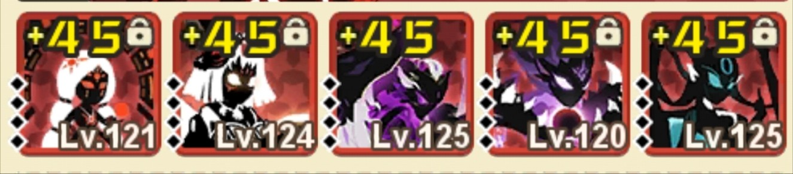
희전덱 중 PVP에서 가장 좋은 덱. 아로히로이의 순수 탱킹이 매우 뛰어나 조합도 다양합니다. 미러전에서는 반·사룡을 채용하는 쪽이 더 좋습니다.
아슾희반솔아카슾희솔아카반사난아콩슾희난
스팩이 안 좋다면 솔라 채용을 추천합니다.
※ 아로히로이 · 희전완포 고정
추천 신생 — 스퍼, 나인테일, 솔라, 사룡, 반, 카라, 미드나이트, 아이가스, @
케론덱
존버덱›
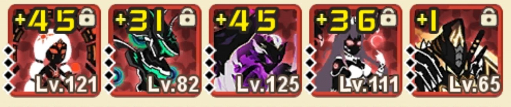
희전덱 중 성능은 가장 안 좋다고 평가받지만, 희전만 있다면 가장 만들기 쉬운 장점이 있습니다. 스킬 봉인을 막는 반, 힐러 겸 딜러 솔라, 케이론의 체급을 올려줄 카라가 모두 중요해 위 구성을 거의 고정으로 사용합니다.
PVE에서는 희전 대신 뫼비를 채용합니다.
오스덱
미는덱›
모든 덱 상대로 이길 수도 질 수도 있는 덱. 이 게임에서 가장 오래 메타 상위권에 군림 중입니다. 못 이기던 덱도 희전완포를 채용해 이기며, 현재 메타를 지배하는 희전 + 탱커 조합을 카운터치기 가장 좋은 덱입니다.
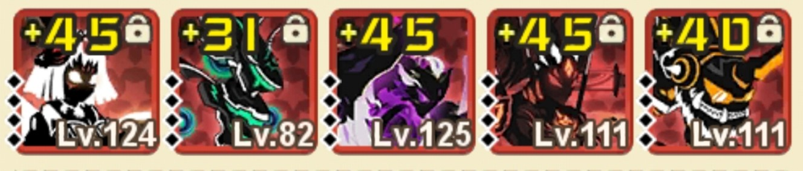
오페라·스크림을 고정하고 뒤에 원딜을 배치합니다. 현재 메타 최다 사용 조합이고 구성이 가장 자유로워,
희전 + 탱커 조합을 녹이는 데 최적화돼 있습니다. 카라를 쓰는 덱 상대로는 나인테일을 앞에 배치해
회오리 타이밍을 엇나가게 만듭니다. 미러전에서는 안타·스퍼를 채용한 덱이 좋습니다(예: 슼오슾반안).
슼오슾반안(난)슼오슽반안(난)슼오배반안(난)슼오아안난
※ 오페라 · 스크림 고정
추천 신생 — 희전완포, 스퍼, 반, 안타레스, 사룡, 나인테일, 스팅, 베리어, 아로히로이, @
질문 많은 부분. 스크림은 빨리 죽어서 오페라에게 버프를 주는 역할입니다 — 빨리 죽는 게 정상이에요.
제로덱
미는덱›
압도적인 DPS로 상대를 녹이는 덱. 희전완포 등장으로 PVP에서는 밀려났지만, 오스덱을 잘 잡고 후반 스테이지를 밀기 위해 필수로 만들어야 합니다. 단, 견고룬 단계가 매우 중요해 뉴비에겐 비추천.
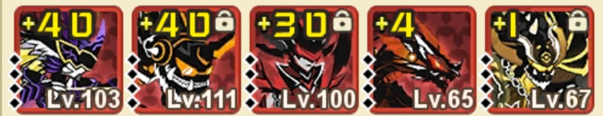
제로의 스킬을 활용해 상대를 벽까지 밀기 위해 근접 4마리 이상을 채용하고, 범위 공격이 있는 원딜을 배치합니다. 제로가 초반에 녹는 것을 막아줄 배리어·스팅, 제로의 체급을 올려줄 스크림이나 카라를 채용합니다. 스크림·카라 대신 울티머스·브루엘을 넣기도 합니다.
※ 배리어 · 제로 · 스팅 · @(근접) 고정
추천 신생 — 안타레스, 나인테일, 카르마, 브루엘, 울티머스
망루덱
미는덱›
이 글에 넣을지 가장 고민한 덱. 한 문장으로 요약하면 "희전완포 나오기 전의 범부". 슾카덱을 굉장히 잘 잡고, 희전덱 중 아희덱과는 비비지만 나머지 희전덱(특히 콩희, 오스+희전)은 못 이깁니다.
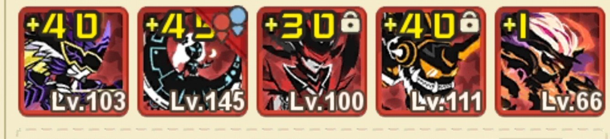
스크림 버프가 있을 때 최대한 이득을 봐야 하므로 스크림·망염의 스팩이 매우 중요합니다. 스크림 대신 카라를 채용하기도 하지만, 희전완포의 존재 때문에 스크림이 더 좋습니다.
※ 망염 맨 앞 고정 · 루나 고정
추천 신생 — 희전완포, 스팅, 안타, 반(루나 채용 시 X), 스크림, 카라, 나인테일, 프시케, 사룡
디바인덱
범용›
슾카덱 다음으로 스테이지 밀기 좋은 덱. 버프 제거가 있는 반이 하드카운터라 PVP에서는 안 좋지만, 반이 없는 스테이지에서 활약합니다.
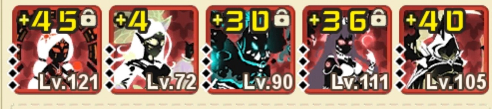
디바인은 수호신을 쓰면 버프가 생기며 점점 강해지는 스킬을 가졌습니다. 수호신마다 버프가 다르며 (기린은 상대에게 디버프), 이런 특성 때문에 디바인을 필두로 디바인이 약한 타이밍을 보호해줄 친구들로 구성합니다.
수호신 사용 순서: 현무 → 기린 → 청룡 → 주작 → 백호
※ 디바인 고정
추천 신생 — 카라, 스크림, 프시케, 스팅, 뫼비우스, 솔라, 루나, 희전완포, 나인테일, 안타레스
무도덱
무한도전 · 극한폭주›
말 그대로 무한도전·극한폭주에서만 사용하는 덱. 소이 / 희전완포 중 무엇을 채용하느냐에 따라 덱이 달라집니다. 둘 중 더 좋은 건 종결 기준 소이입니다.
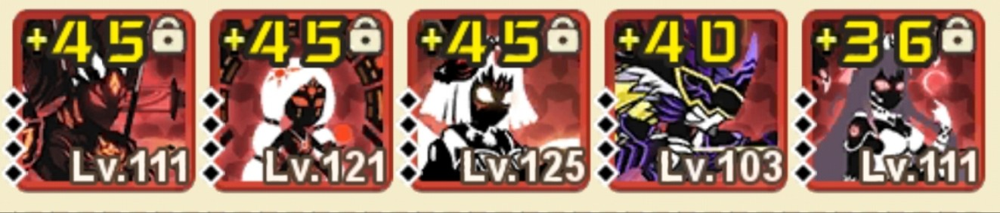
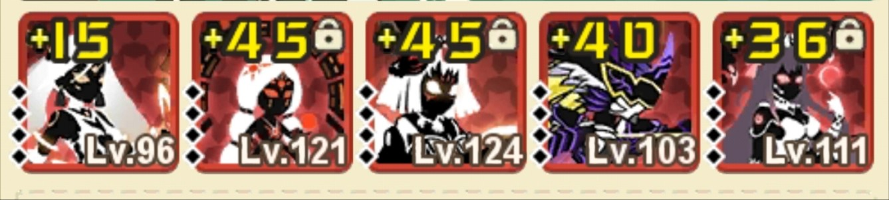
컨텐츠별 덱
운명의 문 · 정글
보통 존버덱을 많이 씁니다. 작성자의 경우 아희덱에 카라를 넣어 사용합니다.
부족 던전
부족 몬스터는 디바인을 조금만 키워도 디바인덱으로 쉽게 밀 수 있지만, 처결이 빡셉니다.
처결은 종결급 스팩이면 디바인으로 간단히 밀고, 그 정도가 아니라면 보통 오페라 지원을 받아
오오슼솔안으로 유니라한을 스봉(스킬 봉인)해 잡습니다.
원시 몬스터
| 덱 | 사용 상황 |
|---|---|
| 디바인덱 | 원거리만 남았거나 원시 단계가 낮을 때. 스팩 좋고 상대 버프가 잘 뜨면 밀기 가능. |
| 오스덱 | 단계가 높아질수록 쓰기 힘들지만, 딜을 우겨넣을 수 있는 몇 안 되는 방법. |
| 망염덱 | 망염 스킬로 지속 딜. 망염을 지원받아 2마리로, 원거리만 남았을 때 원거리를 녹이는 역할. |
| 제로덱 | 원시 몬스터가 근접 4마리일 때 성능이 가장 좋음. |
쌍스팅덱
원시 미는덱›
원시를 가장 잘 미는 덱. 근접만 녹일 수 있어, 한 번에 밀기 불가능한 높은 단계 원시(보통 원시 3 이상)에서 사용합니다. 스크림과 스팅만 있으면 사용 가능합니다.
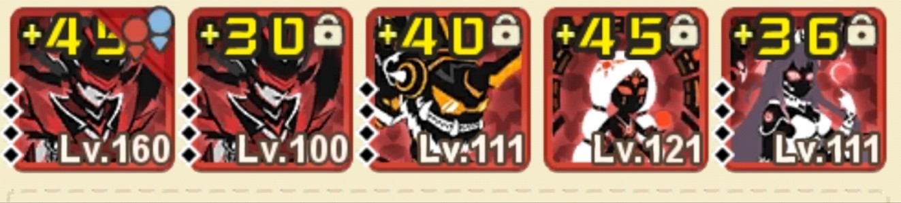
맨 앞에 자폭용 카라를 배치하고 스크림·솔라의 폭주를 터트린 뒤, 최후방의 스팅에 폭주 스크림 + 폭주 솔라 버프를 입혀 반사딜로 녹이는 덱입니다. 수호신 계약 만렙이면 현무 → 주작, 만렙이 아니라면 타이밍 맞춰 주작을 쓰면 됩니다. 고스팩이라 카라가 소중하면 카라 대신 부쉬에 신속룬을 달아 폭주를 터트립니다.
덱 진로
덱 육성 순서에 대한 조언입니다.
- 태초를 1순위로 키웁니다.
- [오스덱] 완성을 1순위 목표로. 쉽게 구하는 신생으로 구성(예:
슼오반소난)을 계속 만듭니다. - 행운 수정으로 스퍼를 뽑았다면 [슾카덱]을 만들어 스테이지·정글·운명의 문·채굴장을 쭉 밉니다.
- 이전 [오스덱]을
오스슾반난구성으로 바꿔 슾카덱과 오스덱을 병행 육성합니다. - 스퍼를 얻었으니 안타레스를 뽑아 [무도덱]을 맞춥니다.
- 그 뒤 희전완포를 뽑아 키웁니다.